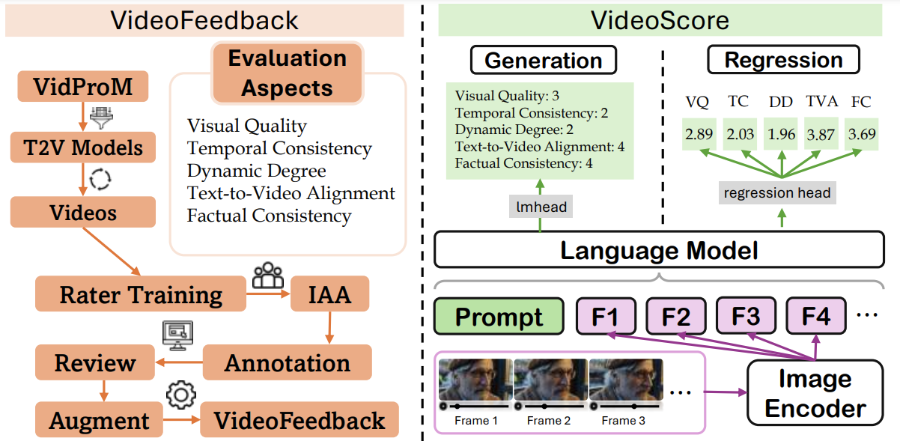

About Me
Hello! My name is Arthur Chen (陳皓楠). I’m a master’s student at the R2L Lab of the University of Waterloo, advised by Victor Zhong. I am also a researcher at the Vector Institute. During my undergraduate studies, I had the privilege of working with Jimmy Lin and Wenhu Chen building retrievers.
Research Interests
I sit at the intersection of Machine Learning (ML) and Natural Language Processing (NLP). To that end, my primary interest is using natural language to enable ML systems (e.g., intelligent agents) to automatically adapt to new environments. I’m particularly interested in:
- Language Grounding: using language to establish a shared context between the ML model and the environment.
- Test-time Adaptation: adapting ML models to new environments without human supervision at deployment/test-time.
- Automatic Evaluation: evaluating ML model performance automatically with minimal human effort (e.g., labeling, human evaluation).
News
- [Dec 2025]: Invited talk on “Test-Time Adaptation via Data Synthesis” at Bloomberg CTO Office.
- [May 2025]: I started my internship at Salesforce AI Research!
Selected Papers
For update-to-date papers, please refer to Google Scholar.

Grounded Test-Time Adaptation for LLM Agents
Arthur Chen, Zuxin Liu, Jianguo Zhang, Akshara Prabhakar, Zhiwei Liu, Shelby Heinecke, Silvio Savarese, Victor Zhong, Caiming Xiong
Introduces two adaptation strategies for LLM agents to adapt at test time without human supervision.
Fourteenth International Conference on Learning Representations (ICLR), 2026.
Links: paper • code • project page
Arthur Chen, Zuxin Liu, Jianguo Zhang, Akshara Prabhakar, Zhiwei Liu, Shelby Heinecke, Silvio Savarese, Victor Zhong, Caiming Xiong
Introduces two adaptation strategies for LLM agents to adapt at test time without human supervision.
Fourteenth International Conference on Learning Representations (ICLR), 2026.
Links: paper • code • project page

SynQuE: Estimating Synthetic Dataset Quality Without Annotations
Arthur Chen, Victor Zhong
SynQuE is a framework and benchmark for ranking synthetic datasets by their expected real-world performance without requiring any labeled real data.
Preprint.
Links: paper • code • project page
Arthur Chen, Victor Zhong
SynQuE is a framework and benchmark for ranking synthetic datasets by their expected real-world performance without requiring any labeled real data.
Preprint.
Links: paper • code • project page

UniIR: Training and Benchmarking Universal Multimodal Information Retrievers
Cong Wei, Yang Chen, Arthur Chen, Hexiang Hu, Ge Zhang, Jie Fu, Alan Ritter, Wenhu Chen
UniIR is an instruction-guided multimodal retriever for eight retrieval tasks, evaluated by the standardized M-BEIR benchmark.
European Conference on Computer Vision (ECCV), Oral Presentation 2024.
Links: paper • code • project page
Cong Wei, Yang Chen, Arthur Chen, Hexiang Hu, Ge Zhang, Jie Fu, Alan Ritter, Wenhu Chen
UniIR is an instruction-guided multimodal retriever for eight retrieval tasks, evaluated by the standardized M-BEIR benchmark.
European Conference on Computer Vision (ECCV), Oral Presentation 2024.
Links: paper • code • project page

VideoScore: Building Automatic Metrics to Simulate Fine-grained Human Feedback for Video Generation
Xuan He, Dongfu Jiang, Ge Zhang, Max Ku, Achint Soni, Sherman Siu, Arthur Chen, et al.
VideoScore is an automatic metric for AI-generated videos that simulates detailed human feedback to predict quality scores.
Empirical Methods in Natural Language Processing (EMNLP), 2024.
Links: paper • code • project page
Xuan He, Dongfu Jiang, Ge Zhang, Max Ku, Achint Soni, Sherman Siu, Arthur Chen, et al.
VideoScore is an automatic metric for AI-generated videos that simulates detailed human feedback to predict quality scores.
Empirical Methods in Natural Language Processing (EMNLP), 2024.
Links: paper • code • project page